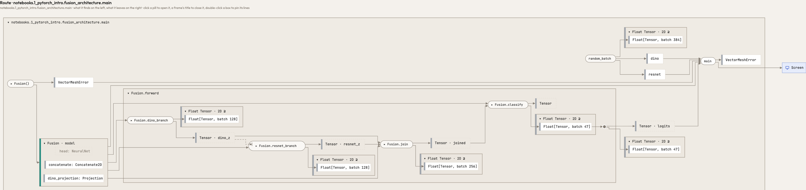
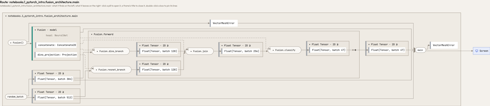
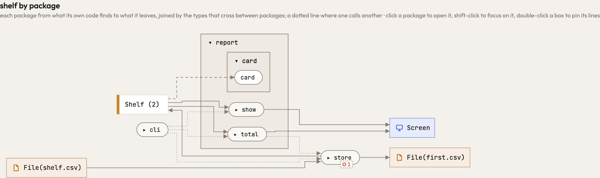
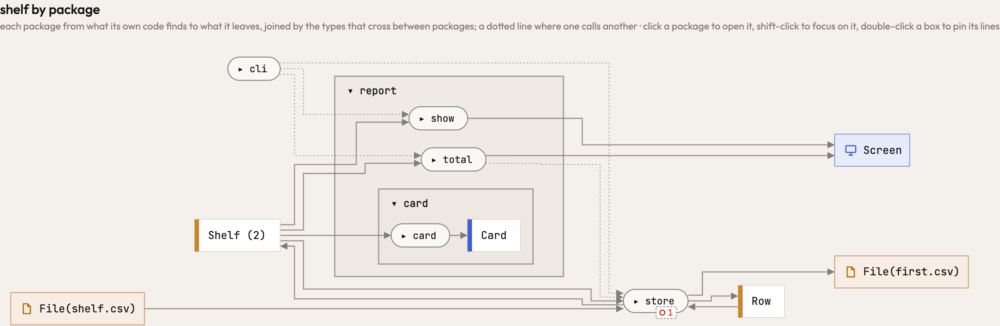
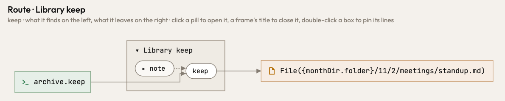
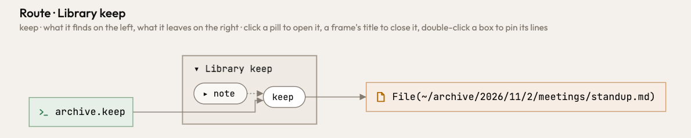
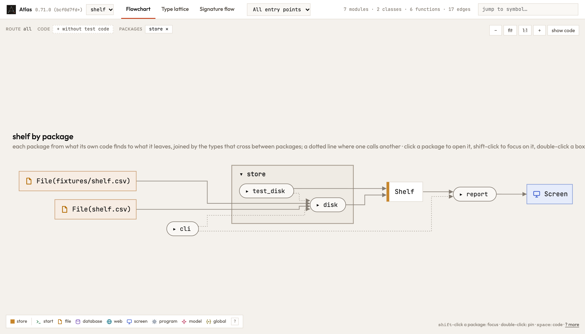
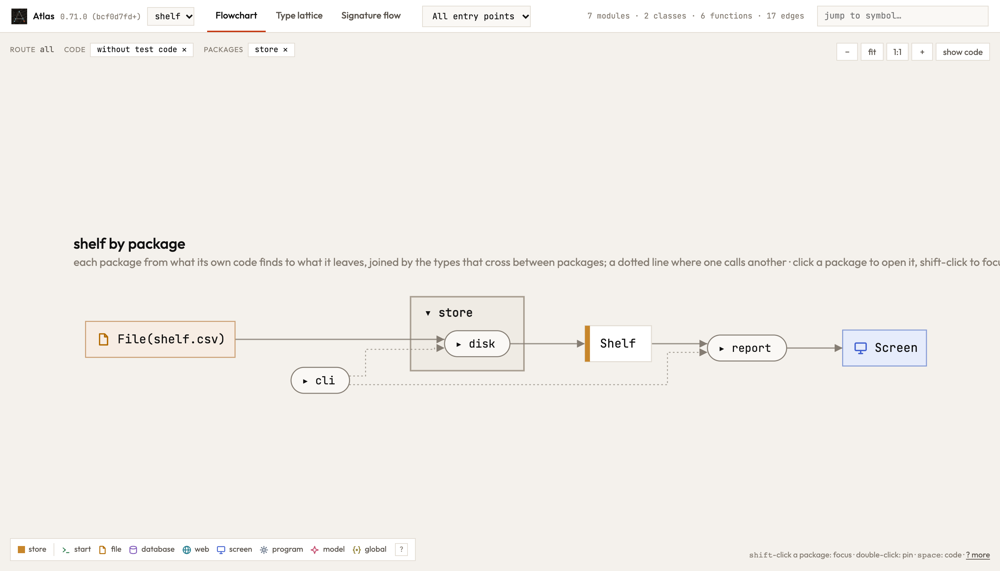

Release 0.72.0
What changed in Atlas 0.72.0
Atlas 0.72.0 reads a PyTorch model the way its author writes it: a submodule that is called runs its forward, and every value between two steps keeps the shape its jaxtyping annotation gives it. A model's forward pass draws as a chain of shapes, from its inputs to its logits. The overview draws what each function gives back, and leaves the program's tests out. A path built by helper functions is the whole path.
Was drawn wrong, now drawn right
Each of these drew something your code does not do. In a picture of Atlas, a red outline is what only the release before draws, a green one what only this release draws.
A PyTorch model draws its forward pass as a chain of shapes
A torch model calls its submodules, self.projection(x) or model(x), and nn.Module runs their forward. Atlas did not follow such a call, so a model drew as steps that lead nowhere unless every call was written self.projection.forward(x). The values between the steps lost their shape as well: a type checker reads Float[Tensor, "batch 128"] as a plain Tensor. Now calling a module is calling its forward, and each value between two steps carries the shape the code declares: a parameter's, an annotated local's, or what the function that made it returns. Handing a model on, as in print(model), is handing on a value, and runs no forward.
In Atlas: the release before and this one
Tensor · dino_z, dino and resnet without a shape

The overview draws what each function gives back
The packages view drew a type only where the code both made and took it. A function whose result no other function took, such as card(shelf) -> Card, or a model's forward that returns Float[Tensor, "*lead {self.out_size}"], drew what it took and no line to what it gave back. Now every type a function makes or takes is a box of the overview, in the smallest package that holds all its makers and takers.
card takes the shelf and gives nothing
card gives a Card
A path built through helpers is the whole path
A path that each folder of it names with a helper function of its own was followed only so deep, so the archive's stand-up notes were written to {monthDir.folder}/11/2/meetings/standup.md, the folder three helpers down left as a hole. Now each function's return is read once, as a term of its parameters, and the notes are written to ~/archive/2026/11/2/meetings/standup.md, in Python, Rust and TypeScript alike. Reading Atlas itself got slightly faster for it (9.8 s to 9.2 s, cold).

~/archive/2026/11/2/meetings/standup.md
Smaller things that were drawn wrong
- A shape written as
Float[Tensor, "..."], which promises no axis, readsFloat Tensor · any rank, where it was drawn raw (#420). - A group of the places one type holds says how many it stands for (
EarlyStopping · 3), and opens to its files as the disk folds them; opening one stopped the page before (#421).
Studio, the page and the agent
The overview shows your program, not its tests
The overview drew all the code, tests included: a test's fixture file and the test's own types stood beside the files the program reads. It now draws the program alone, without Rust's #[test] and tests/, pytest's test_*.py and conftest.py, or a *.test.ts. The chip without test code ✕ above the picture says so, and one click on it draws the tests again.

store opens to disk alone, which reads shelf.csv